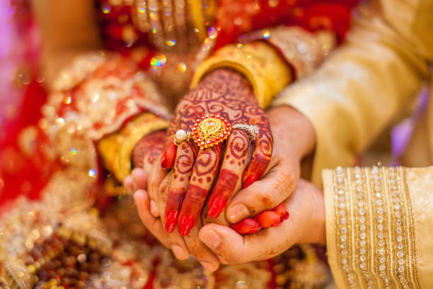
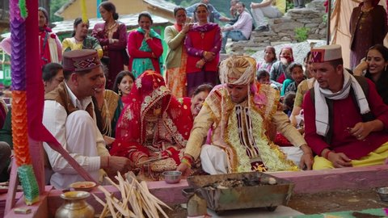
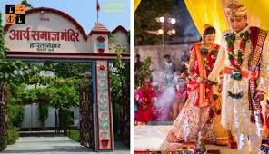
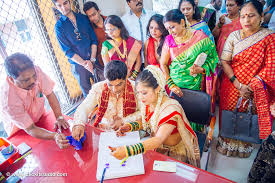
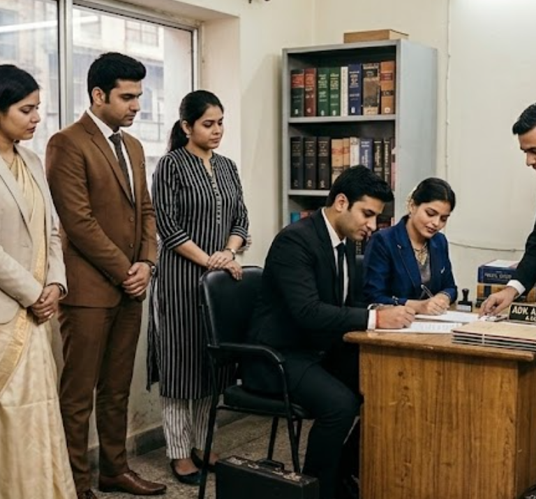
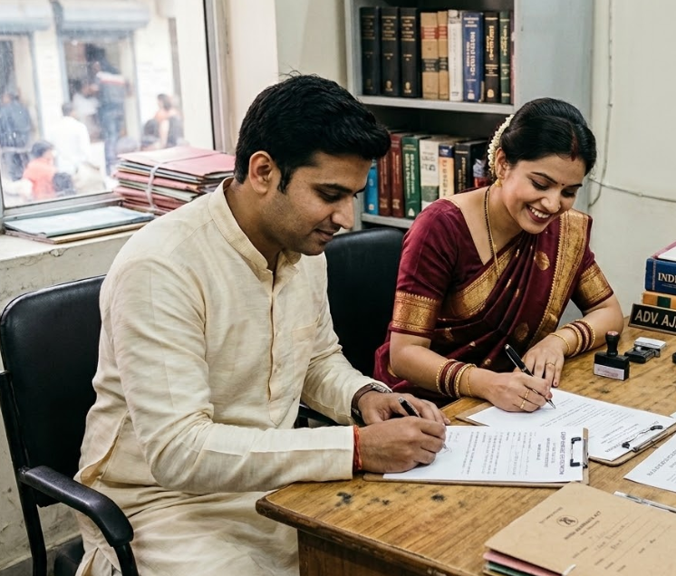

Registration for All Indian Marriages:
Hum har tarah ki Indian shadi ka registration Delhi aur Ghaziabad court me karwate hain:
What is Court Marriage in Delhi & Ghaziabad? Delhi aur Ghaziabad me court marriage kya hota hai?Court marriage is a legal way performed under the supervision of Judicial bodies of the nation in which 2 parties who are eligible as well as willing to get married can complete their marriage with the Authorization of official legal bodies. It is a way through which 2 parties can perform their marriage without any kind of discrimination based on Religion, Caste, race or trait.
Court marriage desh ke nyayik bodies ke supervision ke niche kiya jaane wala ek legal tarika hai jisme do paksh jo shadi ke liye eligible aur taiyaar hain, adhikarik legal bodies ke anumandan ke saath apni shadi poora kar sakte hain. Ye ek tarika hai jisse do paksh dharm, jaati, ya nasl ke kisi bhi bhedbhaav ke bina apni shadi kar sakte hain.
Court marriage karna hai to hamse contact karein - 9990150544
कोर्ट मैरिज कराना है तो हमसे संपर्क करें - 9990150544

Benefits of Court Marriage Court marriage ke faydeCourt marriage ke fayde lein - WhatsApp karein
कोर्ट मैरिज के फायदे लें - व्हाट्सएप करें
Eligibility check ke liye call karein - 9990150544
योग्यता चेक के लिए कॉल करें - 9990150544

Same Day Court Marriage in Delhi & Ghaziabad Delhi aur Ghaziabad me same day court marriageSame-day court marriage is possible in Delhi and Ghaziabad, also referred to as Tatkal court marriage. This is a way through which one can complete his/her marriage in a single visit to the marriage registrar's office in just 1 day.
Same-day court marriage Delhi aur Ghaziabad me possible hai, ise Tatkal court marriage bhi kaha jaata hai. Ye ek tarika hai jisse aap sirf ek din me marriage registrar office me jakar apni shadi poora kar sakte hain.
To complete the same-day court marriage, you need to perform a dedicated Arya samaj marriage under the rituals of traditional Hindu marriage. If you're not Hindu or belong to a different religion, we have provisions for you too.
Same-day court marriage ko poora karne ke liye aapko traditional Hindu marriage ke rituals ke neeche Arya samaj marriage karna padta hai. Agar aap Hindu nahi hai ya kisi aur dharm se belong karte hain, to humare paas aapke liye bhi provisions hain.
Same day marriage ke liye abhi WhatsApp karein
सेम डे मैरिज के लिए अभी व्हाट्सएप करें
Fast service booking ke liye call karein
तेज सर्विस बुकिंग के लिए कॉल करें

Court Marriage Under Special Marriage Act, 1954 Special Marriage Act, 1954 ke under court marriageUnder the Special Marriage Act, 1954, any two persons can marry regardless of their religion, caste, or creed. Fast processing available for urgent cases. This act is perfect for inter-religion and inter-caste marriages.
Special Marriage Act, 1954 ke neeche, koi bhi do persons apne dharm, jaati ya jaat se chaahe kar sakte hain. Urgent cases ke liye fast processing available hai. Ye act inter-religion aur inter-caste marriages ke liye perfect hai.
Special marriage ke liye WhatsApp karein
स्पेशल मैरिज के लिए व्हाट्सएप करें
If you belong to Hindu religion and want to complete your court marriage by following traditional rituals, you can do so under Hindu Marriage Act, 1955. People from Jain, Buddhism, and Sikh religions are also eligible. This allows same-day marriage completion.
Agar aap Hindu dharm se belong karte hain aur apni court marriage traditional rituals follow karke poorna karna chahte hain, to aap Hindu Marriage Act, 1955 ke neeche kar sakte hain. Jain, Buddhism, aur Sikh dharm ke log bhi eligible hain. Ye same-day marriage completion ki anumati deta hai.
Hindu marriage ke liye call karein - 9990150544
हिंदू मैरिज के लिए कॉल करें - 9990150544
Whether it is Tatkal marriage registration in Delhi Court or urgent marriage, we offer best prices.
Delhi court ho ya urgent court marriage, hum sabse kam kharche me kaam karte hain.
For more reviews and testimonials, contact us at 9990150544
और अधिक समीक्षा और प्रशंसापत्र के लिए हमें 9990150544 पर संपर्क करें

Essential Documents Needed for Court Marriage in Delhi Court and Ghaziabad Court. Court marriage ke liye zaroori documents aur gawahon ki jankari yahan dekhen.
Government authorized court marriage in Delhi and authentic Arya Samaj marriage in Ghaziabad Court. Delhi Court marriage registration aur Arya Samaj Mandir me shadi ki puri legal jankari Akshay Gupta se le.We provide legal support for love marriage specialist in Delhi Court and protection for couples.
Love marriage specialist hone ke naate hum couples ko legal protection aur court se puri madad dilwate hain.
We handle cases across Tis Hazari, Karkardooma, Saket, Rohini, and Dwarka court marriage office.
Hum Tis Hazari, Karkardooma, aur Saket court me court marriage aur marriage registration ka kaam karte hain.
Q: How quickly can court marriage be completed?
A: We offer same-day court marriage under Hindu Marriage Act and 24-hour processing under Special Marriage Act.
A: Hindu Marriage Act ke neeche same-day court marriage aur Special Marriage Act ke neeche 24 ghante mein processing available hai.
Q: What documents are required for court marriage?
A: Basic requirements include Aadhar card, age proof (PAN/marksheet), passport photos, and 2 witnesses with ID proof.
A: Basic zaroorat mein Aadhar card, age proof, passport size photo, aur 2 gawahon ke saath unke ID proof chahiye.
Q: Is court marriage legally valid?
A: Yes, court marriage is 100% legal and valid across India and worldwide. You get a government-issued marriage certificate.
A: Haan, court marriage poore tarah se legal hai aur India aur duniya bhar mein valid hai. Aapko sarkar dwara issue kiya gaya marriage certificate milta hai.
Q: Can we do court marriage without parents' permission?
A: Yes, if both parties are adults (21+ for male, 18+ for female), court marriage can be done without parental consent.
A: Haan, agar dono parties adult hain, to parents ki permission ke bina court marriage kar sakte hain.
For more questions, contact us at 9990150544
और सवालों के लिए हमें 9990150544 पर संपर्क करें
🏛️ Court Marriage in Delhi | Marriage Registration Delhi | Legal Marriage Delhi
Get fastest same day court marriage in Delhi, court marriage registration delhi, marriage certificate delhi online, marriage lawyer in delhi, court marriage fees in delhi, legal marriage delhi.
⚡ Same Day Court Marriage Delhi | 1 Day Marriage Delhi | Tatkal Marriage Registration Delhi
Urgent court marriage delhi, same day marriage delhi, court marriage consultant delhi, marriage registration delhi process, tatkal marriage registration delhi, fast track court marriage delhi.
📍 Court Marriage Near Me | Court Marriage in Ghaziabad | Marriage Registrar Delhi
Court marriage in ghaziabad, court marriage ghaziabad fees, court marriage registration ghaziabad, marriage certificate ghaziabad, court marriage lawyer ghaziabad, marriage registrar office near me.
⚖️ Special Marriage Act 1954 | Hindu Marriage Act 1955 | Arya Samaj Marriage Act
Arya samaj marriage delhi, arya samaj marriage ghaziabad, arya samaj mandir marriage registration, arya samaj marriage procedure, arya samaj marriage certificate, muslim marriage act, christian marriage act.
👨⚖️ Court Marriage Lawyer | Court Marriage Advocate | Marriage Consultant
Court marriage lawyer delhi, court marriage advocate, marriage consultant, marriage registration agent, best court marriage lawyer, expert marriage consultant, legal marriage advisor, court marriage law firm.
📋 Court Marriage Process | Court Marriage Documents | Marriage Registration Documents
Court marriage process, court marriage procedure, documents for court marriage, court marriage eligibility, court marriage age limit, marriage registration documents, court marriage without parents, witness for court marriage.
💰 Court Marriage Fees | Court Marriage Cost | Cheap Court Marriage
Court marriage fees, court marriage cost, cheap court marriage, low cost marriage registration, affordable court marriage, court marriage price, arya samaj marriage fees, tatkal marriage cost.
🇮🇳 Court Marriage Kaise Kare | Court Marriage Process in Hindi | Shadi Registration
Court marriage kaise kare, court marriage karne ka tarika, court marriage process in hindi, court marriage ka kharcha, arya samaj mandir me shadi kaise kare, court marriage ke liye documents.